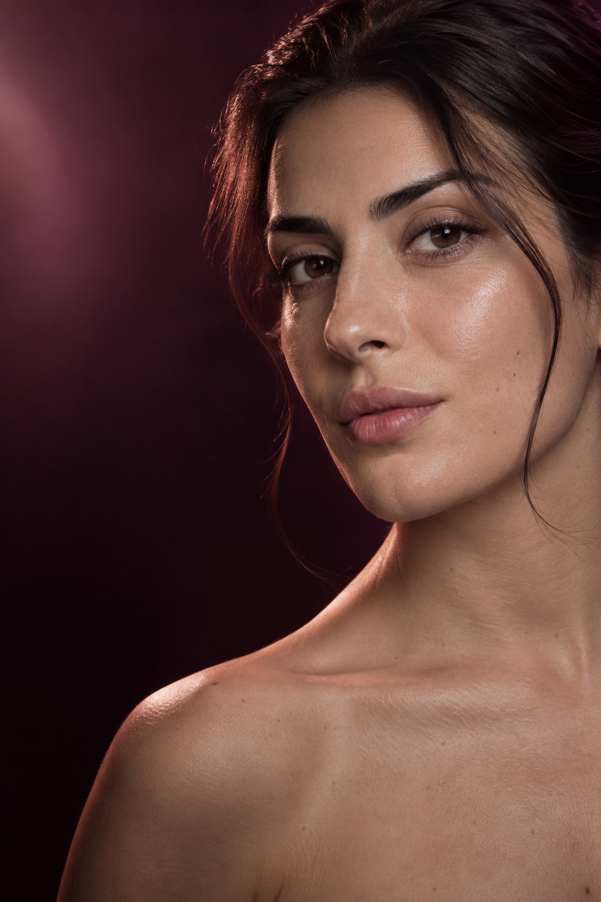
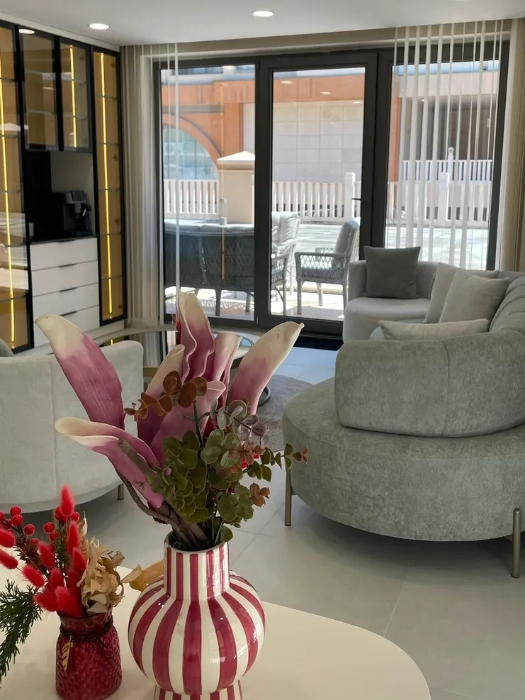

Botoks
Mimik çizgilerinde dinlenmiş ve dengeli bir görünüm.
↗
DR. ERDEM ÇALIŞKANMEDİKAL ESTETİK · SERDİVAN Randevu
DR. ERDEM ÇALIŞKAN MEDİKAL ESTETİK · SERDİVAN
Kişiye özel değerlendirme, modern uygulamalar ve doğal sonuç odaklı medikal estetik.
DOĞAL DENGE · BİLİMSEL YAKLAŞIM
02 — HEKİM YAKLAŞIMI
Her yüzün anatomisi, ihtiyacı ve estetik dengesi farklıdır. Uygulama planı; beklentileriniz dinlenerek, yüz ve cilt değerlendirmesi sonrasında kişiye özel oluşturulur.
03 — FELSEFE
Yüzünüzün karakterini koruyan, iyi hissettiren ve kendiniz gibi görünmeye devam ettiğiniz sonuçlar için.
04 — KLİNİK DENEYİMİ
Değerlendirmeden uygulamaya, her adımda sakin, hijyenik ve konforlu bir klinik deneyimi.
Serdivan'daki kliniği keşfedin ↘


05 — İHTİYACINIZ
Teknik isimlerden önce sizi dinliyor, ihtiyacın kaynağını birlikte anlamaya odaklanıyoruz.
06 — UYGULAMALAR
Mimik çizgilerinde dinlenmiş ve dengeli bir görünüm.
↗Yüz oranlarına saygılı, ölçülü dokunuşlar.
↗Cilt kalitesini destekleyen kontrollü yenilenme.
↗Cildin ihtiyacına göre planlanan destek protokolleri.
↗Ton eşitsizliği ve cilt görünümüne yönelik ışık teknolojisi.
↗Doku ve iz görünümüne yönelik yenileyici yaklaşım.
↗
07 — TEKNOLOJİ & HASSASİYET
Her teknoloji, tek başına bir çözüm değildir. Doğru uygulama; ihtiyacın belirlenmesi, uygun yöntemin seçilmesi ve sürecin hekim tarafından takip edilmesiyle başlar.
08 — SONUÇ
Öncesi ve sonrası değerlendirmeleri; aynı açı, ışık ve zaman aralığı gözetilerek, kişisel onaylar alındıktan sonra paylaşılır.
Sonuçlar hakkında bilgi alın ↗09 — GÜVEN
Beklentilerinizi ve sorularınızı açıkça konuşuyoruz.
Yüz hatlarınızı ve cilt ihtiyacınızı bütün olarak ele alıyoruz.
Size uygun seçenekleri ve süreci anlaşılır biçimde paylaşıyoruz.
Uygulama sonrasında süreci birlikte izliyoruz.
10 — BİLGİ
09.00 — 20.00